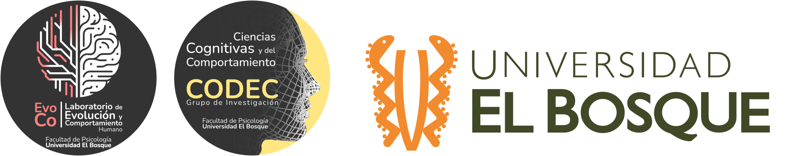

Diseño de protocolos, códigos y datos abiertos
Workshop Abre tu Ciencia
![]()
23 de enero de 2026
📲 Accede a las diapositivas en línea
Apertura
Principios FAIR para datos de investigación
| Principio | Qué significa | En la práctica |
|---|---|---|
| F – Findable | Los datos pueden localizarse fácilmente | Identificador persistente (DOI), metadatos claros, repositorios indexados |
| A – Accessible | Los datos se pueden descargar o consultar | Enlace funcional, permisos explícitos, acceso estable |
| I – Interoperable | Los datos pueden combinarse con otros | Formatos abiertos y legibles por máquina (CSV, JSON), vocabularios estándar |
| R – Reusable | Los datos pueden reutilizarse | Licencia clara (p. ej., CC-BY), documentación suficiente |
Apertura
La situación: Datos abiertos
Apertura
La situación: Cumplimiento FAIR reciente por área
El problema real
- La apertura suele hacerse al final
- Protocolos implícitos
- Código frágil o irreproducible
- Datos públicos pero inutilizables
Diagnóstico
FAIR no falla por falta de buena voluntad,
sino por mal diseño inicial
Idea central
Abrir no es publicar al final
- La apertura es una decisión de diseño
- Afecta cómo:
- pensamos el estudio
- analizamos los datos
- comunicamos resultados
Protocolos abiertos
¿Qué es realmente un protocolo?
- No es solo un preregistro
- Es un contrato metodológico
- Define:
- qué cuenta como dato
- qué análisis son válidos
- qué decisiones se permiten
Protocolos bien diseñados
- Decisiones explícitas
- Separar:
- teoría
- técnica
- Versionado
- Trazabilidad de cambios
Protocolos y FAIR
- Findable: existe y se puede localizar
- Reusable: se entiende por qué se decidió lo que se decidió
Código abierto
Código abierto ≠ subir scripts
- El código es parte del método
- Código sin estructura ≠ transparencia
Buenas prácticas mínimas
- Un script = una tarea clara
- Separar:
- datos crudos
- datos procesados
- análisis
- README explicativo
- Flujo ejecutable
Código ejecutable
El código no se abre para ser leído,
se abre para ser ejecutado
- Punto de entrada claro
- Sin pasos manuales ocultos
- Rutas relativas
- Automatización mínima
Datos abiertos
Abrir sin dañar
- Privacidad
- Consentimiento
- Poblaciones vulnerables
- Datos sensibles
Datos machine-readable
Qué significa
- Interpretables automáticamente
- Sin decisiones humanas implícitas
- Estructura clara:
- filas = observaciones
- columnas = variables
Excel vs CSV
El problema no es Excel, es el diseño
Excel permite: - celdas fusionadas - múltiples encabezados - formato visual - ambigüedad estructural
CSV como decisión de diseño
- Formato abierto
- Sin elementos visuales
- Estructura tabular explícita
- Previene errores antes de que ocurran
La estética no es metadato
FAIR y datos
- Accessible ≠ “abre en mi computador”
- Interoperable ≠ “yo sé cómo leerlo”
- Reusable requiere contexto y estructura
Proc B como ejemplo
No como revista, sino como modelo
- Datos, código y README son evaluables
- Reproducibilidad computacional mínima
- Excepciones éticas explícitas
- Documentación central
El rol del README
- Más importante que el archivo de datos
- Conecta:
- protocolo
- datos
- código
- Permite reutilización real
Reproducibilidad razonable
No es replicación total
es ejecución sin fricción
- El código corre
- Los datos cargan
- El flujo tiene sentido
Cierre
Una regla simple
Si no entiendo mi propio proyecto en 6 meses
sin explicaciones extra, no está listo para ser abierto
Mensaje final
La ciencia abierta no es un requisito administrativo
es infraestructura intelectual
Preguntas

Juan David Leongómez PhD, MSc